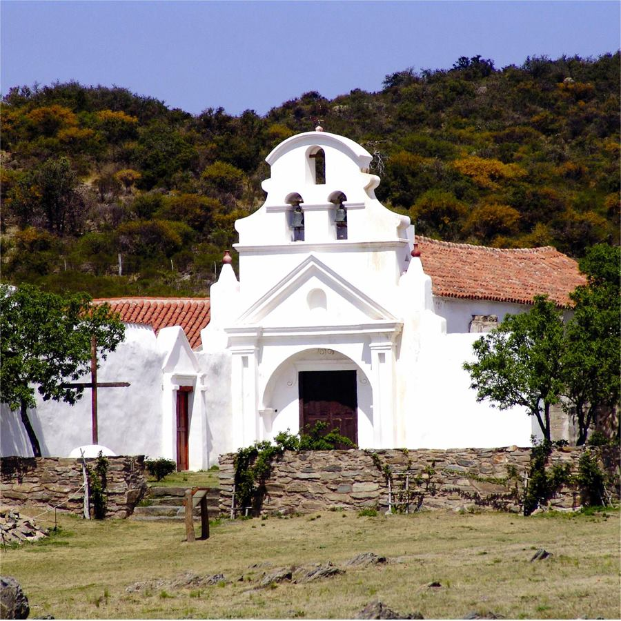

Inicio
El camino de las Estancias Jesuíticas constituye un itinerario turístico cultural que permite descubrir y conocer los valores patrimoniales y el legado que dejó el paso de los jesuitas. Reconocidos a nivel mundial, estos magníficos sitios históricos fueron declarados Patrimonio Cultural de la Humanidad por la UNESCO en el año 2000. Este recorrido nos lleva a experimentar un viaje al pasado, disfrutando de paisajes pintorescos que parecen detenidos en el tiempo, y de tradiciones y costumbres fuertemente arraigadas, que son uno de los sellos identitarios de Córdoba.
En el periodo de tiempo comprendido entre 1599, año de la llegada de los Jesuitas a Córdoba, empezaron a hacer estancias y granjas. Cada estancia tiene su propia iglesia y conjunto de edificios, alrededor de los cuales crecieron las ciudades como Alta Gracia.
Las Estancias Jesuíticas fueron antiguos establecimientos agropecuarios diseñados y administrados por los Padres de dicha orden, ubicados en la actual provincia de Córdoba, Argentina. Los conjuntos arquitectónicos de cada establecimiento, sumados a la Manzana Jesuítica de la ciudad de Córdoba, constituyeron la sede religioso-administrativa de la Provincia jesuítica del Paraguay.
Las estancias fueron abandonadas por los jesuitas tras la Pragmática Sanción de 1767 del rey Carlos III de España que los expulsó del continente. Las administraron los franciscanos hasta el año 1853, cuando los jesuitas regresaron al continente americano.
En Córdoba podes visitar cinco estancias jesuíticas: Colonia Caroya(1616), Jesús María (1618), Santa Catalina (1622), Alta Gracia (1643), La Candelaria (1678) y San Ignacio (1725). A ellas se suma la Manzana Jesuítica de la ciudad de Córdoba.
Estancia Colonia Caroya
A unos 50 kilómetros de la ciudad de Córdoba se asienta La Estancia Caroya. Se trata del primer establecimiento rural organizado por la Compañía de Jesús, en el año 1616.
A la hora de visitarla, es posible descubrir sus tres etapas históricas. Destinada a sostener las actividades educativas en la Capital, en 1661 Ignacio Duarte Quirós la adquirió para donarla al Colegio Nacional del Monserrat, como residencia de verano para sus estudiantes.
Monumento Histórico Nacional y Provincial por su enorme valor histórico y arquitectónico, la estancia conserva su estructura colonial y arquitectura residencial. En su interior, está compuesta por un patio central en claustro y la Capilla. Además, cuenta con un perchel, el tajamar, restos del molino y de las acequias, y una quinta.
Declarada Patrimonio de la Humanidad por la UNESCO, junto a las otras estancias en la provincia, en ella se puede realizar una visita guiada por el actual Museo Histórico y de los Inmigrantes, entre antiguos objetos y muebles. Además, incluye recorridos por el predio, en los que el visitante podrá enterarse de los sistemas productivos y técnicos empleados por los jesuitas.
Estancia Jesus Maria
 Construida en 1618, la Estancia de Jesús María, hoy Museo Jesuítico Nacional, es uno de los sitios imperdibles para conocer en este enclave del norte cordobés. Dedicada a la producción vitivinícola, fue el segundo núcleo productivo del sistema organizado por la Compañía de Jesús.
Construida en 1618, la Estancia de Jesús María, hoy Museo Jesuítico Nacional, es uno de los sitios imperdibles para conocer en este enclave del norte cordobés. Dedicada a la producción vitivinícola, fue el segundo núcleo productivo del sistema organizado por la Compañía de Jesús.
La Estancia de Jesús María se encuentra solo 4 kilómetros al norte de la Estancia de La Caroya, siguiendo siempre por la Ruta Nacional 9 en la provincia de Córdoba. Su ubicación no es fortuita: por allí pasaba el camino Real, en su huella hacia la capital del Virreinato. En sus tierras se originó la actual ciudad cordobesa de Jesús María.
Dentro de la casa que habitaban los jesuitas, se atesoran objetos religiosos y una colección arqueológica es esculturas de divinidades precolombinas.
Este museo forma parte de las Estancias Jesuíticas de Córdoba, declaradas por la UNESCO como Patrimonio Mundial en el año 2000. Desde 2014, también es un sitio de memoria de la organización Ruta del Esclavo.
Estancia Santa Catalina
Camino a Ascochinga aparece La Estancia de Santa Catalina, cuya organización fue iniciada por los jesuitas a partir de 1622. Se trata del mayor conjunto arquitectónico edificado por la Compañía fuera de la ciudad de Córdoba.
Es posible visitarla y descubrir cómo conserva el diseño propio de los siglos XVII y XVIII. Además, en ella puede apreciarse una Iglesia monumental, que cuenta con una imponente fachada de dos torres y remate curvilíneo en su cuerpo central. Sobre él, destaca una potente estructura de columnas y frontones curvos. Observando estos detalles, trasluce en esta fachada la influencia del barroco centroeuropeo.
Junto a la iglesia se encuentran: el pequeño cementerio, precedido por un portal –que repite el estilo de la fachada de la iglesia– y la residencia, con tres patios, locales anexos y huerta.
Santa Catalina forma parte de la red de estancias jesuíticas declaradas Patrimonio de la Humanidad por la UNESCO.
Estancia Alta Gracia
 A sólo 38 kilómetros de la ciudad de Córdoba, una parada obligatoria para descubrir el legado jesuita en nuestra provincia es la Estancia Alta Gracia. La construcción data del año 1643, por lo que visitarla es un verdadero viaje a través del tiempo y la historia.
A sólo 38 kilómetros de la ciudad de Córdoba, una parada obligatoria para descubrir el legado jesuita en nuestra provincia es la Estancia Alta Gracia. La construcción data del año 1643, por lo que visitarla es un verdadero viaje a través del tiempo y la historia.
 Está integrada por la iglesia, que destaca por su fachada sin torres. La arquitectura denota curvas interrumpidas y pilastras de influencia barroco-italiano tardía. Puede verse cómo su planta, ligeramente curvada, se corona con una cúpula sin tambor y una espadaña de piedra en la parte posterior.
Está integrada por la iglesia, que destaca por su fachada sin torres. La arquitectura denota curvas interrumpidas y pilastras de influencia barroco-italiano tardía. Puede verse cómo su planta, ligeramente curvada, se corona con una cúpula sin tambor y una espadaña de piedra en la parte posterior.
Además de ser un recurso turístico declarado Patrimonio de la Humanidad por la UNESCO, la iglesia funciona como parroquia de la localidad.
Estancia La candelaria
 En plena área serrana, la Estancia de La Candelaria resalta en una planicie de altura ondulada llamada “Pampa de San Luis”. Este tesoro arquitectónico se ubica al norte de las Sierras Grandes, en el departamento de Cruz del Eje.
A 150 kilómetros de la ciudad de Córdoba, organizada por la Compañía de Jesús a partir de 1683, esta estancia se destacó como establecimiento rural ganadero. Con una extensión de 300.000 hectáreas, en ella los jesuitas se dedicaron a la cría de mulas, las cuales destinaban al negocio de bienes con el Alto Perú.
Declarada Monumento Histórico Nacional y Provincial y Patrimonio de la Humanidad por la UNESCO, es un atractivo imperdible para conocer al noroeste de la provincia.
Estancia San ignacio
Fue la última estancia construida por los jesuitas en la provincia de Córdoba (Argentina), que formaba parte de los bienes temporales de la Compañía de Jesús en esa región.
Se trató de la más grande de las estancias jesuíticas de Córdoba, con una superficie total de 120 leguas cuadradas, es decir unas 280 000 hectáreas; fue la finca más grande que hayan tenido los jesuitas en Córdoba. Está ubicada en una planicie inclinada que se asoma al río Santa Rosa, y actualmente las ruinas del casco se ubican a mitad de camino entre las localidades de Santa Rosa de Calamuchita y Amboy; parte de las mismas forman parte de la localidad de San Ignacio.
Debido al alto grado de deterioro de las ruinas, éstas no forman parte del Patrimonio de la Humanidad al que sí pertenecen desde el año 2000.
Manzana Jesuítica de la ciudad de Córdoba
Uno de los paseos imperdibles a la hora de recorrer la ciudad de Córdoba es visitar la Manzana Jesuítica. Este conjunto edilicio comprende la Iglesia de la Compañía, la Capilla Doméstica y la Residencia de los padres. A su vez, el antiguo Rectorado de la Universidad Nacional de Córdoba (antes Colegio Máximo de la Compañía).
En 1599 la Compañía de Jesús se asienta en la ciudad de Córdoba, en el espacio que hoy es conocido como la Manzana Jesuítica. Allí se erigieron la principal Iglesia de la Compañía, el Colegio Máximo y el Convictorio, a partir de los cuales se comenzaría a desarrollar la labor espiritual y educativa de la compañía, que dio origen a la Universidad Nacional de Córdoba y al Colegio Nacional de Monserrat.